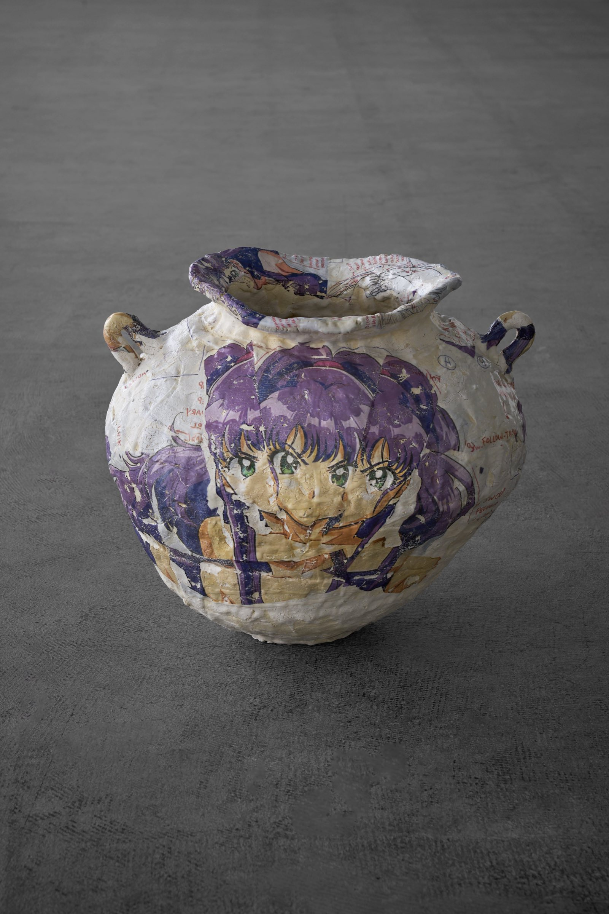
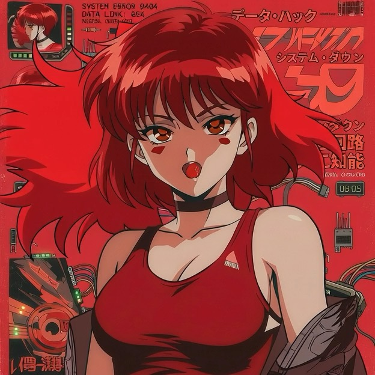
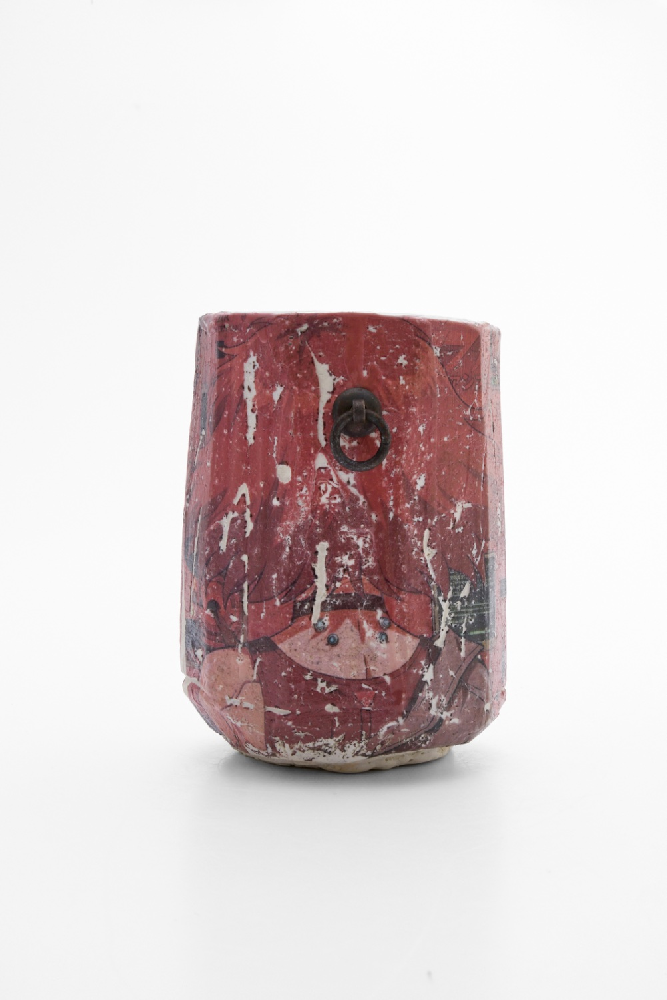

IMAGES, FIRED — /HAL/
物と画像が溢れ、AIがその洪水を加速させる時代に、「本物」とは何か。私は無限に生成される画像から一枚を選び、土と火の技術で作った器に750℃で焼き付ける。消せるはずのニセモノは、人間が作った物語と工芸の技術——二つのホンモノに挟まれ、二度と取り消せない一つの実在になる。「画像を、焼く」とは、溢れる世界で本物を問い直す行為だ。
伊勢崎 陽太郎
ISEZAKI YOTARO — CERAMIC ARTIST / TAJIMI, JP


750°C — 7 HOURS
窯の中で画像は陶に固定される — REGEN: DISABLED / 複製可能性 ∞ → 0
ALL CHARACTERS: ORIGINAL — 登場するキャラクターはすべてAIで生成したオリジナル。既存アニメからの引用ではありません。
クリックで拡大・作品データを表示。

SPECIMEN // HAL_01 / 緋SELECT — 器に焼き込む色を選択
私は備前に生まれた。数千年、人間が土と火と交わしてきた技術の記憶の中で育った。手が覚えている感覚、窯の中で起きることを引き受ける覚悟。それは複製できない、身体にしか宿らない「本物」だ。
いま、世界は物と画像で溢れている。良いものと、そうでないものの境目は見えにくくなり、AIは無限に画像を生成することで、その洪水をさらに加速させている。
その洪水の中から、私は一枚の画像を選ぶ。AIが生んだアニメのキャラクター——ワンクリックで消せるはずの「ニセモノ」を、本物の技術で作った器に転写し、750℃で焼き付ける。火を通った瞬間、それは二度と取り消せない、この世界に一つだけの実在になる。無限に流れていくものを、一つだけ、止める。
ニセモノは、それだけでは輝けない。AIの画像の背後には、私たちがアニメや漫画から受け取った物語——人間が本気で作った「本物」——が堆積し、それを受け止める器には、土と火の技術がある。ニセモノは、二つのホンモノに挟まれて初めて光る。
だから私は「画像を、焼く」。溢れる世界の中で、本物とは何かを陶の上で問い直す、私なりの工芸の続きだ。
ISEZAKI YOTARO